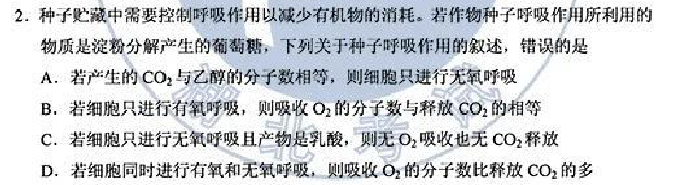
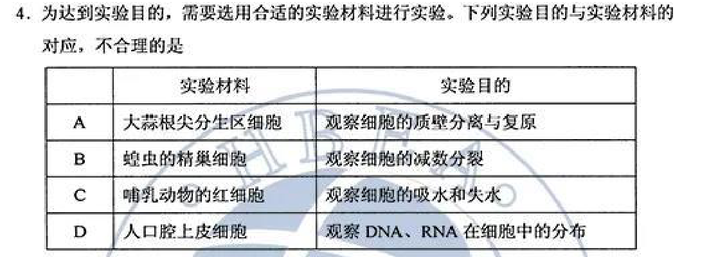
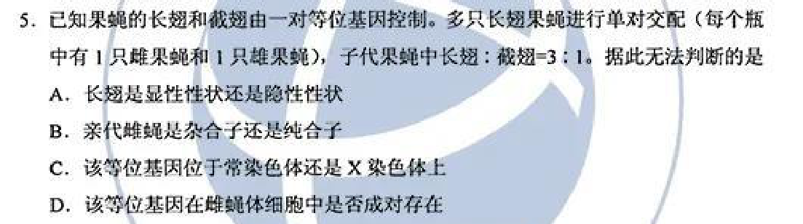
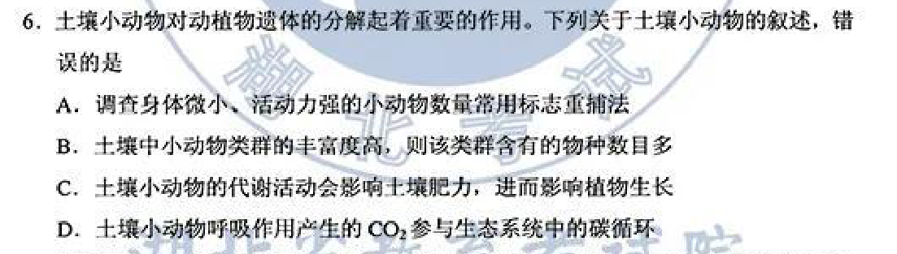
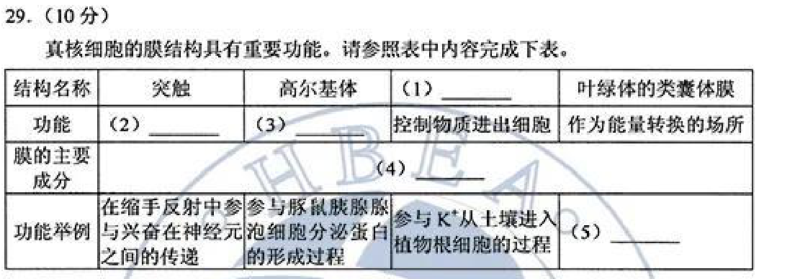
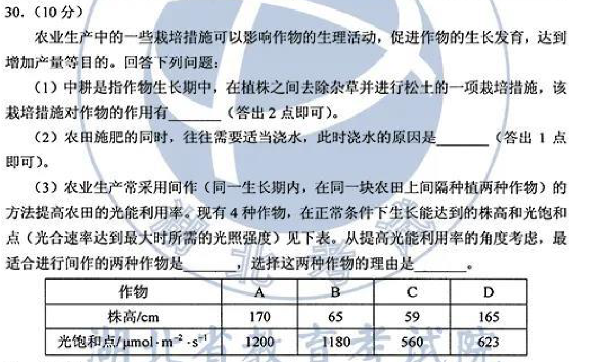
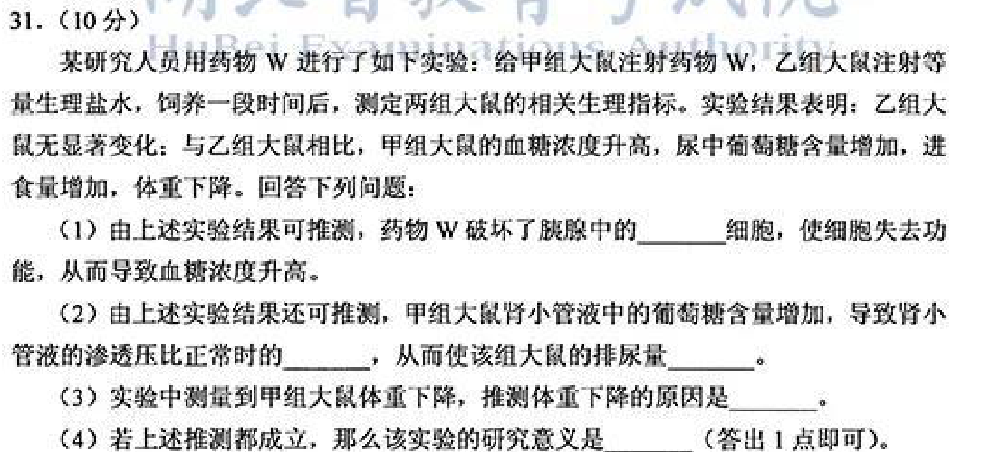
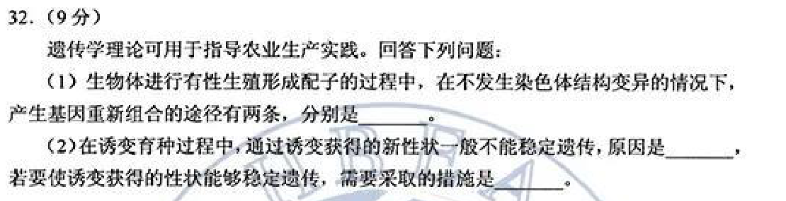
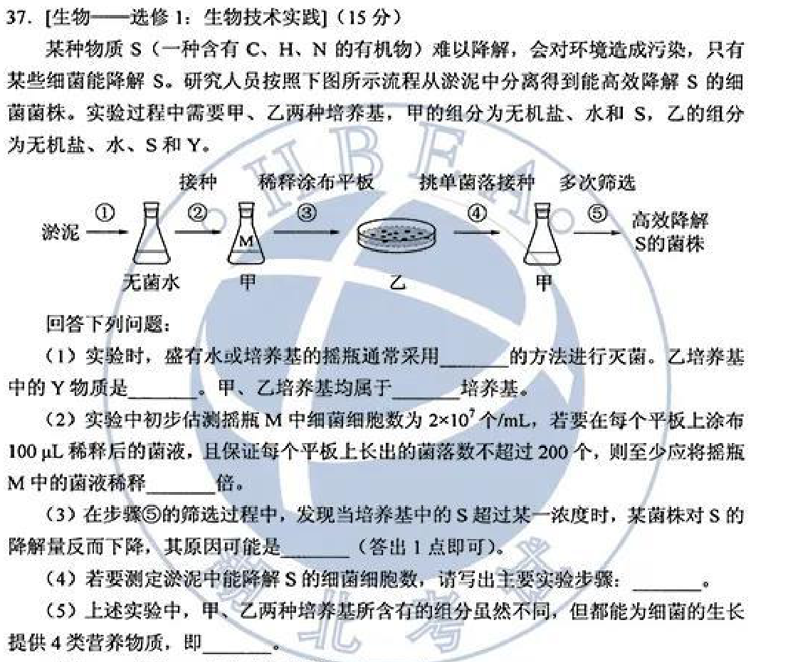
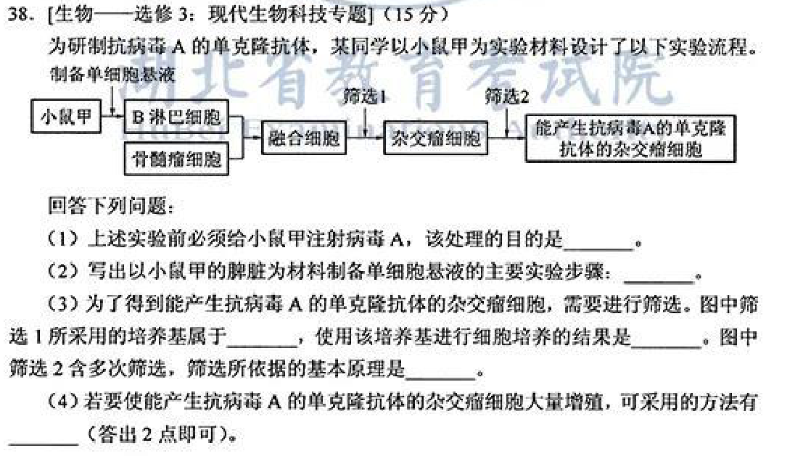

答卷前，考生务必将自己的姓名、准考证号填写在答题卡上。
回答选择题时，选出每小题答案后，用铅笔把答题卡上对应题目的答案标号涂黑，如需改动，用橡皮擦干净后，再选涂其它答案标号。回答非选择题时，将答案写在答题卡上，写在本试卷上无效。
考试结束后，将本试卷和答题卡一并交回。
原卷第一部分选择题共13小题，每小题6分，共78分；每小题只有一项符合题目要求。本册收录其中生物第1—6题。
原卷第22—32题为必考题，每个试题考生都必须作答；本册收录其中生物第29—32题。
原卷选考题说明：请考生从2道物理题、2道化学题、2道生物题中每科任选一题作答。如果多做，则每学科按所做的第一题计分。生物第37、38题各15分，本册两题均收录供复习。
相关题目：第 1 题 · 第 2 题 · 第 3 题 · 第 4 题 · 第 5 题 · 第 6 题 · 第 29 题 · 第 30 题 · 第 31 题 · 第 32 题 · 第 37 题 · 第 38 题
返回原卷作答说明
题目与已知条件
新冠肺炎疫情警示人们要养成良好的生活习惯，提高公共卫生安全意识。下列相关叙述错误的是
A. 戴口罩可以减少病原微生物通过飞沫在人与人之间的传播
B. 病毒能够在餐具上增殖，用食盐溶液浸泡餐具可以阻止病毒增殖
C. 高温可破坏病原体蛋白质空间结构，煮沸处理餐具可杀死病原体
D. 生活中接触的物体表面可能存在病原微生物，勤洗手可降低感染风险
查看原题图／原始配图
原始配图 1 · 第1题原题图版
所用高中知识
病毒无细胞结构，需活宿主细胞才能复制增殖。高温可破坏病原体蛋白质结构；屏障与清洁措施可降低传播。
读题与思路
病毒须寄生活细胞，餐具不是其独立增殖场所，所以B不成立。口罩减少飞沫、热处理使病原蛋白变性、手卫生减少传播均有生物学依据。
分步解析
- A：口罩减少飞沫传播，是物理屏障，正确。
- B：餐具不是活宿主细胞，病毒不能在其表面自行增殖；食盐水抑制细菌的渗透原理也不能据此套用病毒繁殖，错误。
- C：高温使蛋白质空间结构破坏，可灭活病原体，正确。
- D：物体表面可能有病原体，手卫生可降低接触传播风险，正确。
检查与易错点
表面检出病毒或核酸不等于表面发生病毒繁殖。本题解释的是生物学机制，不替代具体消毒产品使用说明。
本题来源：paper · doc-supplied · web-current-pdf
返回原卷作答说明
题目与已知条件
种子贮藏中需要控制呼吸作用以减少有机物的消耗。若作物种子呼吸作用所利用的物质是淀粉分解产生的葡萄糖，下列关于种子呼吸作用的叙述，错误的是
A. 若产生的CO2与乙醇的分子数相等，则细胞只进行无氧呼吸
B.若细胞只进行有氧呼吸，则吸收O2的分子数与释放CO2的相等
C.若细胞只进行无氧呼吸且产物是乳酸，则无O2吸收也无CO2释放
D.若细胞同时进行有氧和无氧呼吸，则吸收O2的分子数比释放CO2的多
查看原题图／原始配图

原始配图 1 · 第2题原题图版所用高中知识
以葡萄糖为底物，有氧呼吸消耗6O₂、释放6CO₂；酒精发酵产生2乙醇、2CO₂，不消耗O₂；乳酸发酵不释CO₂。
读题与思路
葡萄糖有氧呼吸耗6O₂产6CO₂，酒精发酵产2CO₂/2乙醇且不耗氧，乳酸发酵不产CO₂。因此两类呼吸并存时耗氧不可能比CO₂释放更多，D错。
分步解析
- A：酒精发酵CO₂与乙醇等量，若同时有有氧呼吸，则还会多出CO₂；二者相等可支持只无氧呼吸。
- B：仅有氧呼吸且底物为葡萄糖，O₂消耗与CO₂生成分子数相等。
- C：乳酸发酵不消耗O₂、不释放CO₂，正确。
- D：有氧和无氧同时发生时，酒精发酵会增加CO₂而不耗氧；乳酸发酵则不改变气体比。O₂不可能因此多于CO₂，D错误。
检查与易错点
题目限定以葡萄糖为底物，不能拿脂肪氧化耗氧较多来反驳该计量。
本题来源：paper · doc-supplied · web-current-pdf
返回原卷作答说明
题目与已知条件
某研究人员以小鼠为材料进行了与甲状腺相关的实验，下列叙述错误的是
A. 切除小鼠垂体，会导致甲状腺激素分泌不足，机体产热减少
B. 给切除垂体的幼年小鼠注射垂体提取液后，其耗氧量会增加
C. 给成年小鼠注射甲状腺激素后，其神经系统的兴奋性会增强
D. 给切除垂体的小鼠注射促甲状腺激素释放激素，其代谢可恢复正常
查看原题图／原始配图
原始配图 1 · 第3题原题图版
所用高中知识
下丘脑TRH作用垂体，垂体TSH作用甲状腺；甲状腺激素促进代谢、产热并影响神经兴奋性。
读题与思路
垂体切除使TSH和GH供应不足；补垂体提取液可促生长，甲状腺激素可增强兴奋性。TRH靶器官正是已切除的垂体，不能靠它恢复正常功能，所以D错。
分步解析
- A：垂体切除导致TSH不足，甲状腺激素减少，产热下降，正确。
- B：垂体提取液含促甲状腺激素，可促进甲状腺分泌甲状腺激素，使细胞代谢加快、耗氧量增加，正确。
- C：适量甲状腺激素能提高成年小鼠神经兴奋性，正确。
- D：TRH需要垂体响应，垂体已切除时不能靠注射TRH恢复该调节轴，错误。
检查与易错点
TRH与TSH名称只差“释放”二字，却有不同分泌部位和靶器官。
本题来源：paper · doc-supplied · web-current-pdf
返回原卷作答说明
题目与已知条件
为达到实验目的，需要选用合适的实验材料进行实验。下列实验目的与实验材料的对应，不合理的是
| 实验材料 | 实验目的 |
| A | 大蒜根尖分生区细胞 | 观察细胞的质壁分离与复原 |
| B | 蝗虫的精巢细胞 | 观察细胞的减数分裂 |
| C | 哺乳动物的红细胞 | 观察细胞的吸水和失水 |
| D | 人口腔上皮细胞 | 观察DNA、RNA在细胞中的分布 |
查看原题图／原始配图

原始配图 1 · 第4题原题图版所用高中知识
质壁分离通常选有成熟大液泡的活植物细胞；精巢含减数分裂细胞；成熟哺乳动物红细胞适合观察渗透变化。
读题与思路
成熟大液泡利于观察质壁分离，根尖分生区细胞缺乏该特征，A材料不适用。精巢观察减数分裂、红细胞吸失水、口腔上皮定位DNA/RNA均可行。
分步解析
- A：根尖分生区细胞幼嫩，通常缺少成熟大液泡，不适于观察典型质壁分离与复原，错误对应。
- B：蝗虫精巢有处于不同减数分裂时期的细胞，可用。
- C：红细胞无细胞壁，放入不同渗透条件可吸水涨破或失水皱缩，可用。
- D：人口腔上皮细胞为真核细胞，可用相应染色观察DNA、RNA分布。
检查与易错点
大蒜根尖可用于有丝分裂，不表示它也适合所有植物细胞实验；材料选择由目标决定。
本题来源：paper · doc-supplied · web-current-pdf
返回原卷作答说明
题目与已知条件
已知果蝇的长翅和截翅由一对等位基因控制。多只长翅果蝇进行单对交配(每个瓶中有1只雌果蝇和1只雄果蝇)，子代果蝇中长翅∶截翅=3∶1。据此无法判断的是
A. 长翅是显性性状还是隐性性状
B. 亲代雌蝇是杂合子还是纯合子
C. 该等位基因位于常染色体还是X染色体上
D. 该等位基因在雌蝇体细胞中是否成对存在
查看原题图／原始配图

原始配图 1 · 第5题原题图版所用高中知识
杂合子自交型交配通常给显性∶隐性=3∶1。但不统计后代性别时，常染色体及特定X连锁组合都可给总比例3∶1。
读题与思路
长翅亲本生截翅说明长显性，母本必杂合。Aa×Aa与XᴬXᵃ×XᴬY总体均可3:1，两模型雌性基因都成对，唯独不能定位常染色体/X，选C。
分步解析
- 长翅×长翅出现截翅，说明长翅显性、截翅隐性。
- 常染色体模型Aa×Aa可得3∶1；X连锁模型XᴬXᵃ雌×XᴬY雄，合计也有3/4长翅、1/4截翅。
- 两模型中的母本均为杂合子，且雌体该位点成对存在，所以可判断B、D所问内容。
- 只给不分性别的比例无法判断常染色体或X，需进一步统计截翅是否仅雄性等信息。
检查与易错点
不能仅凭3∶1就断言常染色体；伴性遗传也可在总体上出现相同比例。
本题来源：paper · doc-supplied · web-current-pdf
返回原卷作答说明
题目与已知条件
土壤小动物对动植物遗体的分解起着重要的作用。下列关于土壤小动物的叙述，错误的是
A. 调查身体微小、活动力强的小动物数量常用标志重捕法
B. 土壤中小动物类群的丰富度高，则该类群含有的物种数目多
C. 土壤小动物的代谢活动会影响土壤肥力，进而影响植物生长
D. 土壤小动物呼吸作用产生的CO2参与生态系统中的碳循环
查看原题图／原始配图

原始配图 1 · 第6题原题图版所用高中知识
土壤小动物常身体小、易逃避，不易准确标记与重捕，通常采用取样器取样、采集和分类统计。丰富度表示物种数。
读题与思路
微小土壤动物不宜可靠标记重捕，应取样器取样，故A错。物种数体现丰富度；分解和代谢影响土壤养分，呼吸放出CO₂参与碳循环，余项成立。
分步解析
- A：个体微小难标记，标记易伤害或影响活动，土壤样本通常用取样器法，故错误。
- B：丰富度高表示类群所含物种数较多，正确。
- C：碎屑摄食及代谢有助分解、养分转化，影响土壤肥力和植物，正确。
- D：呼吸CO₂返回无机环境，参与碳循环，正确。
检查与易错点
标记重捕常用于可可靠标记且活动范围较大的动物，并非凡“会移动”都用该法。
本题来源：paper · doc-supplied · web-current-pdf
返回原卷作答说明
题目与已知条件
（10分）真核细胞的膜结构具有重要功能。请参照表中内容完成下表。
| 结构名称 | 突触 | 高尔基体 | （1）________ | 叶绿体的类囊体膜 |
| 功能 | （2）________ | （3）________ | 控制物质进出细胞 | 作为能量转换的场所 |
| 膜的主要成分 | （4）________ |
| 功能举例 | 在缩手反射中参与兴奋在神经元之间的传递 | 参与豚鼠胰腺腺泡细胞分泌蛋白的形成过程 | 参与K+从土壤进入植物根细胞的过程 | （5）________ |
查看原题图／原始配图

原始配图 1 · 第29题原题图版所用高中知识
各膜主要由脂质和蛋白质构成，具体蛋白种类决定功能差异。突触参与信息传递，高尔基体加工运输蛋白，细胞膜控制进出，类囊体承载光反应。
读题与思路
依表逐格定位：控制物质出入是细胞膜，突触作信息传递，高尔基体加工修饰分泌蛋白；膜共有主要成分脂质、蛋白质。类囊体光反应将光能转为ATP与NADPH的化学能。
分步解析
- （1）控制物质进出细胞并参与土壤矿质进入的膜是细胞膜。
- （2）突触在神经元间传递信息，其一般功能写参与信息传递。
- （3）高尔基体参与分泌蛋白加工、修饰、分类和包装运输。
- （4）表列生物膜的主要共同成分为脂质、蛋白质。
- （5）类囊体膜上的色素和酶将光能转成ATP、NADPH中的化学能，作为能量转换实例。
答案
（1）细胞膜；（2）参与信息传递；（3）对蛋白质进行加工修饰等；（4）脂质和蛋白质；（5）光反应在类囊体膜上将光能转化为化学能。
检查与易错点
原表结构和各单元格均保留。不能把高尔基体填成蛋白质最初合成场所，翻译实际在核糖体。
本题来源：paper · doc-supplied · web-current-pdf
返回原卷作答说明
题目与已知条件
（10分）农业生产中的一些栽培措施可以影响作物的生理活动，促进作物的生长发育，达到增加产量等目的。回答下列问题：
（1）中耕是指作物生长期中，在植株之间去除杂草并进行松土的一项栽培措施，该栽培措施对作物的作用有________（答出2点即可）。
（2）农田施肥的同时，往往需要适当浇水，此时浇水的原因是________（答出1点即可）。
（3）农业生产常采用间作（同一生长期内，在同一块农田上间隔种植两种作物）的方法提高农田的光能利用率。现有4种作物，在正常条件下生长能达到的株高和光饱和点（光合速率达到最大时所需的光照强度）见下表。从提高光能利用率的角度考虑，最适合进行间作的两种作物是________，选择这两种作物的理由是________。
| 作物 | A | B | C | D |
| 株高/cm | 170 | 65 | 59 | 165 |
| 光饱和点/μmol·m-2·s-1 | 1 200 | 1 180 | 560 | 623 |
查看原题图／原始配图

原始配图 1 · 第30题原题图版所用高中知识
作物与杂草争夺光、水、矿质营养；根系有氧呼吸需氧，矿质吸收需水溶状态。冠层合理分层可匹配不同光需求。
读题与思路
除草减竞争、松土增氧促进根呼吸和主动吸收。水使矿质溶解可被根吸收。A(170cm,1200)占高层强光，C(59cm,560)用低层弱光，两者高度和光需求同时互补。
分步解析
- 去杂草减少水分、矿质和光竞争；松土增加通气，促进根系有氧呼吸、利于主动吸收矿质。
- 施肥后适度浇水使矿质离子溶解在水中，便于根吸收，也可避免局部浓度过高造成失水。
- A高170 cm且光饱和点1200，适合上层强光；C矮59 cm且光饱和点560，可利用下层较弱光。
- A、C高度与光需求差异互补，较同高或同高光需求组合更能充分利用光。
答案
（1）减少杂草竞争；增加土壤氧气、促进根呼吸（两点）。（2）肥料中的矿质需溶于水后才便于根吸收等。（3）A与C；A高且需强光，C矮且在较低光强可达较高光合水平，形成光资源分层利用。
检查与易错点
不能只选高矮差最大而忽略光饱和点；实际间作仍需合理密度，题目按给定正常生长特性比较。
本题来源：paper · doc-supplied · web-current-pdf
返回原卷作答说明
题目与已知条件
（10分）某研究人员用药物W进行了如下实验：给甲组大鼠注射药物W，乙组大鼠注射等量生理盐水，饲养一段时间后，测定两组大鼠的相关生理指标。实验结果表明：乙组大鼠无显著变化；与乙组大鼠相比，甲组大鼠的血糖浓度升高，尿中葡萄糖含量增加，进食量增加，体重下降。回答下列问题：
（1）由上述实验结果可推测，药物W破坏了胰腺中的________细胞，使细胞失去功能，从而导致血糖浓度升高。
（2）由上述实验结果还可推测，甲组大鼠肾小管液中的葡萄糖含量增加，导致肾小管液的渗透压比正常时的________，从而使该组大鼠的排尿量________。
（3）实验中测量到甲组大鼠体重下降，推测体重下降的原因是________。
（4）若上述推测都成立，那么该实验的研究意义是________（答出1点即可）。
查看原题图／原始配图

原始配图 1 · 第31题原题图版所用高中知识
胰岛B细胞分泌胰岛素，促进组织利用储存葡萄糖并降低血糖。小管液溶质增加可妨碍水重吸收；糖利用障碍使脂肪蛋白质分解增加。
读题与思路
高血糖、尿糖、消瘦提示W损伤胰岛B细胞使胰岛素不足。小管液糖增加使渗透压高、重吸收水减少而尿增；葡萄糖利用不足时脂肪蛋白分解增加。可据此建立糖尿病研究模型。
分步解析
- W处理组表现类似胰岛素缺乏，推测损伤胰岛B细胞，使胰岛素分泌不足，血糖升高。
- 小管液葡萄糖多使其渗透压高于正常，水重吸收减少，尿量增加。
- 虽进食多，但葡萄糖摄取利用不足，机体转而分解更多脂肪、蛋白质供能，体重下降。
- 若证实，可构建胰岛素缺乏型糖尿病动物模型，用于研究发病机制和测试相应干预药物。
答案
（1）胰岛B。（2）高；增加。（3）胰岛素不足使葡萄糖利用受限，脂肪蛋白质消耗增多。（4）建立相关糖尿病动物模型，研究机制或筛选治疗药物。
检查与易错点
尿糖与尿量升高的联系是小管液渗透压，不是把抗利尿激素直接假定为零；模型用途也不能当作人体治疗结论。
本题来源：paper · doc-supplied · web-current-pdf
返回原卷作答说明
题目与已知条件
（9分）遗传学理论可用于指导农业生产实践。回答下列问题：
（1）生物体进行有性生殖形成配子的过程中，在不发生染色体结构变异的情况下，产生基因重新组合的途径有两条，分别是________。
（2）在诱变育种过程中，通过诱变获得的新性状一般不能稳定遗传，原因是________，若要使诱变获得的性状能够稳定遗传，需要采取的措施是________。
查看原题图／原始配图

原始配图 1 · 第32题原题图版所用高中知识
减数分裂中独立分配与同源非姐妹染色单体交换是基因重组的重要来源。新诱发显性变异常先以杂合状态出现，自交可分离出纯合后代。
读题与思路
不涉及结构变异的重组有同源染色体非姐妹染色单体互换、非同源染色体自由组合。新诱变性状常因杂合而自交分离，适宜自交作物可连续自交选择及后代鉴定获得纯合稳定品系。
分步解析
- 减Ⅰ前期，同源染色体非姐妹染色单体交叉互换，使同一染色体上基因重新组合。
- 减Ⅰ后期，同源染色体分离、非同源染色体自由组合，使不同染色体上的非等位基因重新组合到配子中。
- 诱变常只改变一条同源染色体上的等位基因，使相关位点为杂合，后代仍可能性状分离，不能稳定遗传。
- 对适宜自交作物连续自交并选择符合目标的后代，后代检验确认不再分离，获得稳定纯合品系。
答案
（1）同源染色体非姐妹染色单体互换；非同源染色体自由组合。（2）相关性状基因常为杂合，后代发生分离；连续自交、选择并鉴定纯合稳定后代。
检查与易错点
不是所有突变体都必然杂合或不稳定，题目说“一般”。自交适用于能自交的育种对象，不能泛化给所有动物和自交不亲和植物。
本题来源：paper · doc-supplied · web-current-pdf
返回原卷作答说明
题目与已知条件
[生物——选修1：生物技术实践]（15分）某种物质S（一种含有C、H、N的有机物）难以降解，会对环境造成污染，只有某些细菌能降解S。研究人员按照下图所示流程从淤泥中分离得到能高效降解S的细菌菌株。实验过程中需要甲、乙两种培养基，甲的组分为无机盐、水和S，乙的组分为无机盐、水、S和Y。
回答下列问题：
（1）实验时，盛有水或培养基的摇瓶通常采用________的方法进行灭菌。乙培养基中的Y物质是________。甲、乙培养基均属于________培养基。
（2）实验中初步估测摇瓶M中细菌细胞数为2×107个/mL，若要在每个平板上涂布100μL稀释后的菌液，且保证每个平板上长出的菌落数不超过200个，则至少应将摇瓶M中的菌液稀释________倍。
（3）在步骤⑤的筛选过程中，发现当培养基中的S超过某一浓度时，某菌株对S的降解量反而下降，其原因可能是________（答出1点即可）。
（4）若要测定淤泥中能降解S的细菌细胞数，请写出主要实验步骤________。
（5）上述实验中，甲、乙两种培养基所含有的组分虽然不同，但都能为细菌的生长提供4类营养物质，即________。
查看原题图／原始配图

原始配图 1 · 第37题原题图版所用高中知识
S同时含C、H、N，可作为选择培养基的碳源和氮源。液体富集、固体分离、反复筛选能获得降解能力较强菌株。
读题与思路
摇瓶高压蒸汽灭菌，乙的凝固剂为琼脂，两配方均以S选择菌。每皿未稀释细胞数2×10⁷×0.1=2×10⁶，除以200得至少10⁴倍。高S可抑菌或抑酶；定量稀释涂布选择平板并按原样量换算。S含C/H/N，可兼作碳、氮源。
分步解析
- 装水和培养基的摇瓶常用高压蒸汽灭菌。乙比甲多凝固剂Y，故Y为琼脂；两者以S为限定营养源，属于选择培养基。
- M中2×10⁷个/mL，每皿接100 μL=0.1 mL，未稀释将有2×10⁶个。要不超过200个，稀释倍数至少2×10⁶÷200=10⁴。
- S高于阈值可能产生毒害、抑制菌生长或抑制相关降解酶活性，使总降解反而下降。
- 称取已知量淤泥加入已知体积无菌水，充分混匀梯度稀释，定量涂布乙平板并设平行及空白对照；培养后选合适菌落数计数，按平均菌落数、接种体积、稀释倍数和原样量换算。
- 基本营养四类为水、碳源、氮源和无机盐；同一种S可同时承担碳源和氮源功能。
答案
（1）高压蒸汽灭菌；琼脂；选择。（2）10⁴倍。（3）过高S抑制细菌生长或降解酶活性等。（4）称样制悬液、梯度稀释、定量平行涂布选择平板、培养计数并换算。（5）水、碳源、氮源、无机盐。
检查与易错点
100 μL不是1 mL。平板菌落估计的是可培养活菌形成单位，细胞成团可能低估真实细胞数。
本题来源：paper · doc-supplied · web-current-pdf
返回原卷作答说明
题目与已知条件
[生物——选修3：现代生物科技专题]（15分）为研制抗病毒A的单克隆抗体，某同学以小鼠甲为实验材料设计了以下实验流程。
回答下列问题：
（1）上述实验前必须给小鼠甲注射病毒A，该处理的目的是________。
（2）写出以小鼠甲的脾脏为材料制备单细胞悬液的主要实验步骤：________。
（3）为了得到能产生抗病毒A的单克隆抗体的杂交瘤细胞，需要进行筛选。图中筛选1所采用的培养基属于________，使用该培养基进行细胞培养的结果是________。图中筛选2含多次筛选，筛选所依据的基本原理是________。
（4）若要使能产生抗病毒A的单克隆抗体的杂交瘤细胞大量增殖，可采用的方法有________（答出2点即可）。
查看原题图／原始配图

原始配图 1 · 第38题原题图版所用高中知识
免疫后B细胞具抗原特异性，骨髓瘤细胞能持续增殖。先用选择培养基筛能存活的杂交瘤，再用特异性抗原—抗体检测筛目标抗体并克隆化。
读题与思路
先免疫才有目标抗体B细胞；脾脏无菌剪碎并酶处理成悬液。选择培养基先筛杂交瘤，抗原抗体特异反应再筛目标分泌细胞并单克隆化。扩增可体外培养或按题所用教材的小鼠腹腔培养方法。
分步解析
- 实验前以病毒A抗原免疫小鼠甲，诱导产生能分泌抗病毒A抗体的B淋巴细胞。
- 无菌取小鼠甲脾脏，剪碎；用适宜浓度胰蛋白酶等处理，分散成单细胞，终止消化并加入培养液，过滤/洗涤制成细胞悬液。这里“酶解分散”是关键得分步骤，不能只写取脾脏加培养液。
- 筛选1用选择培养基，未融合细胞及不合适融合细胞不能持续生长，保留杂交瘤细胞。
- 筛选2利用抗原—抗体反应特异性检测培养上清，挑选分泌抗病毒A抗体者，并经单细胞克隆化和多次筛选，获得稳定单克隆株。
- 大量增殖可在体外大规模培养；按当年教材也可注入适宜小鼠腹腔增殖、从腹水获取。现实应遵守动物伦理并优先考虑可行体外方法。
答案
（1）获得能产生抗病毒A抗体的B淋巴细胞。（2）无菌取脾脏、剪碎、胰蛋白酶消化分散、加入培养液制成单细胞悬液。（3）选择培养基；只有杂交瘤细胞能够生长；抗原与抗体反应具有特异性。（4）体外培养；适宜小鼠腹腔内培养等。
检查与易错点
第一轮杂交瘤不一定分泌所需抗体，必须第二轮检测。只获得混合抗体阳性细胞也未必单克隆，还需单细胞克隆和稳定性筛选。
本题来源：paper · doc-supplied · web-current-pdf
题源与核验说明
- 2020年高考真题——理科综合（全国卷Ⅰ） Word版含解析【KS5U 高考】.doc所附参考资料；SHA-256：fe7988c1fd1e51495fa1d73ccd6fc9a74398addfd39c398aa99cde9b79fac13f
- web-paper.pdf原卷文件；SHA-256：8635e79f06d31954cd258f9ebde348eca23a14de432a8b8d097e9c248549281c
- 自主选拔在线：2020全国Ⅰ卷理综真题及参考答案25页完整原卷PDF中的核对范围为第1–2、12–13、16页生物题面。所附Word将非选择题编号重排为7–12；第3题B另有“耗氧量”转录版，本册依原扫描保留“体重”。